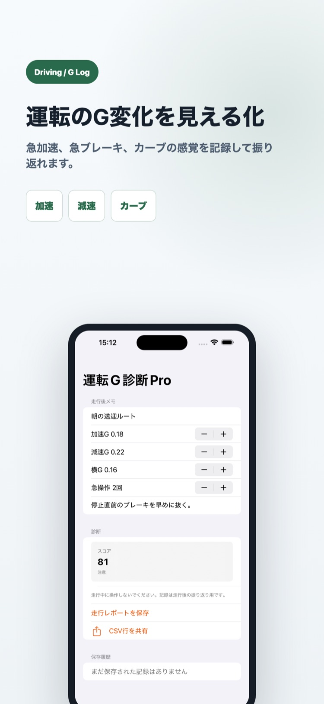
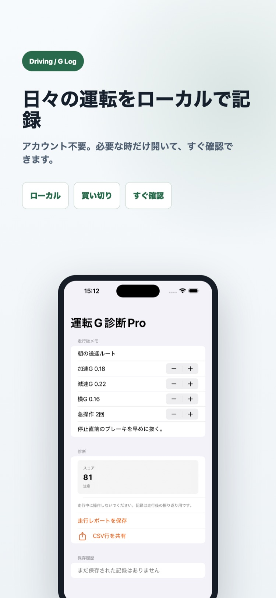

向いている人
運転指導、練習、社用車の振り返りで急操作を具体化したい人向け。
7月23日まで導入価格 1200円（通常2500円）
走行後に加速G、減速G、横G、急操作回数を入力し、運転セッションを振り返れます。

運転指導、練習、社用車の振り返りで急操作を具体化したい人向け。
「もっと滑らかに」だけでは、どの場面の操作を直すべきか共有しにくいままです。


走行後に確認した加速G、減速G、横G、急操作回数。
入力値から振り返りスコアを出し、ルートと改善メモをセッション別に残します。
走行レポートをCSVの1行形式で共有できます。
いいえ。走行後、安全な場所へ停車してからG値と急操作回数を手入力します。
ありません。運転中は操作せず、必ず安全な場所へ停車してから記録してください。
いいえ。入力値から算出する振り返りの目安であり、運転技術、安全性、事故リスクを判定・保証しません。
はい。ルート、G値、急操作回数、スコアをCSVの1行形式で共有できます。
運転G診断Proは1200円（7月23日まで・通常2500円）の買い切りです。機能と対応端末はApp Storeで確認できます。